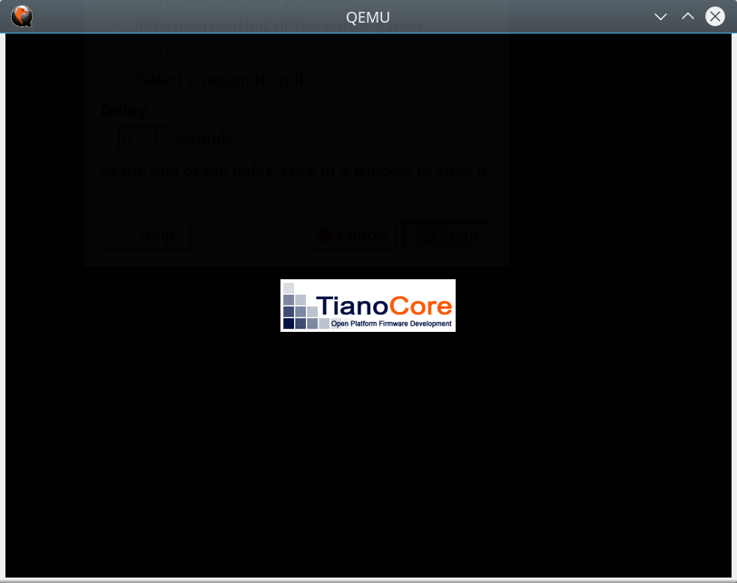
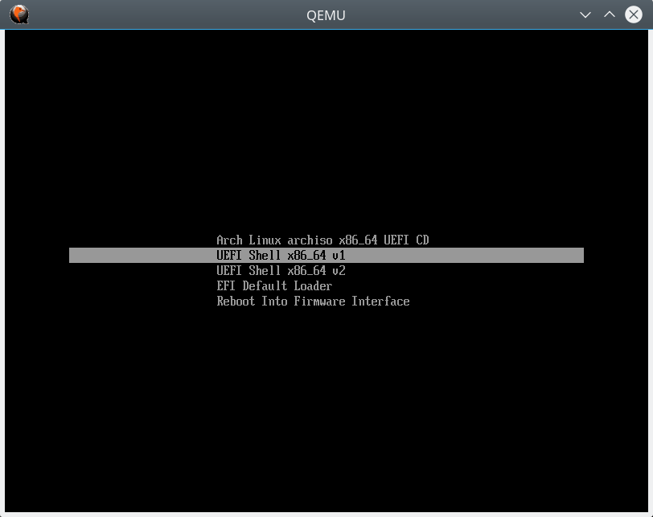
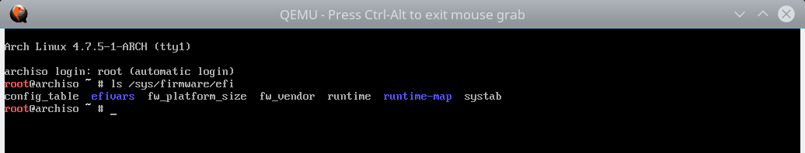
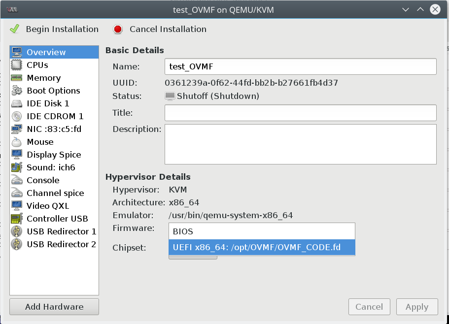

OVMF (Open Virtual Machine Firmware) is the UEFI reference implementation. This firmware is based on EDK2 (EFI Development Kit) and it comes from the Intel's project "TianoCore".
By default, virtual machine uses a legacy BIOS implementation (For instance, QEMU uses SeaBIOS). With OVMF, virtual machine could enjoy the new features such as GUID partition tables and Secure Boot (for testing purposes only).
At this point, running a UEFI virtual machine with QEMU is still a fairly obscure use-case for which it can be difficult to find good examples. So, this post describes how to install OVMF on Gentoo Linux then, how to start an UEFI virtual machine with QEMU/KVM.
OVMF
- Install required packages
# emerge git nasm
- Get the latest source for EDKII
$ mkdir ~/src
$ cd ~/src
$ git clone git://github.com/tianocore/edk2.git
$ cd edk2
- Choosing which version of OVMF to build
$ nano ~/src/edk2/Conf/target.txt
ACTIVE_PLATFORM = OvmfPkg/OvmfPkgX64.dsc
TARGET_ARCH = X64
TOOL_CHAIN_TAG = GCC49
- build
cd ~/src/edk2/OvmfPkg/
./build.sh
The build output files are in "~/src/edk2/Build/OvmfX64/DEBUG_GCC49/FV/" :
- OVMF.fd : contains executable firmware code and the variable store
- OVMF_CODE.fd: contains the executable firmware code
- OVMF_VARS.fd: contains the variable store
At this point, you have 2 options:
- Use a writable copy of OVMF.fd for each virtual machine
- Use OVMF_CODE.fd in read only for all virtual machines and a writable copy of OVMF_VARS.fd for each virtual machine.
Warning: the variable store should be private to the virtual machine. For this reason, each virtual machine needs a private, writable copy of OVMF.fd or OVMF_VARS.fd.
QEMU / KVM
- Copy OVMF files
$ mkdir VirtualMachine/OVMF
$ cp ~/src/edk2/Build/OvmfX64/DEBUG_GCC49/FV/OVMF* VirtualMachine/OVMF/
- create disk image
$ qemu-img create -f qcow2 OVMF.qcow2 10G
- Start virtual machine (Option 1)
$ qemu-system-x86_64 -m 1G -enable-kvm -vga virtio \
-drive if=pflash,format=raw,readonly,file=OVMF/OVMF_CODE.fd \
-drive if=pflash,format=raw,file=OVMF/OVMF_VARS.fd \
-drive if=virtio,file=OVMF.qcow2 \
-cdrom iso/archlinux-2016.10.01-dual.iso
- Start virtual machine (Option 2)
$ qemu-system-x86_64 -m 1G -enable-kvm -vga virtio \
-drive if=pflash,format=raw,file=OVMF/OVMF.fd \
-drive if=virtio,file=OVMF.qcow2 \
-cdrom iso/archlinux-2016.10.01-dual.iso



LibVirt
- Copy OVMF files
# mkdir /opt/OVMF
# cp src/edk2/Build/OvmfX64/DEBUG_GCC49/FV/OVMF* /opt/OVMF
- Configure LibVirt
# nano /etc/libvirt/qemu.conf
nvram = [ "/opt/OVMF/OVMF_CODE.fd:/opt/OVMF/OVMF_VARS.fd" ]
- Restart LibVirt and create a new virtual machine

What still needs to be done
- Secure Boot support
- Install OVMF with Portage (When OVMF package will be available)